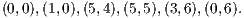

- Show that the given point is not in the convex hull of feasible solutions, by giving a valid constraint that is violated by this point.
- Find an optimal solution to the node packing problem for this graph. Prove your solution is optimal.
Solution:
- Vertices A,B,C,H,F constitute an odd hole, giving the valid constraint

The left hand side of this constraint evaluates to 2.3 for the given point.
- If xG = 1 then the largest possible value for the left hand side of the constraint in part (a) is 1, so the
constraint can be lifted to

(1) The vertices D,E,J form a clique, so we also have the valid constraint
Thus, any packing can use at most 3 vertices. The vertices and their degrees are:
degree vertices 5 C 4 F,G,H,J 3 A,D,E 2 B We claim the node packing A,C,E with value 17 is optimal.
First note, any packing with just 2 vertices has value at most 13. So the optimal packing must contain 3 vertices.
Vertices C and F constitute a maximal packing, so they cannot both be part of an optimal packing. Vertex C is adjacent to all of G, H, and J, so any packing containing C with 3 nodes cannot have value larger than 17.
F, G, H form a clique, so no packing can contain more than 2 of the vertices of degree 4.
So no packing has value larger than 17.
Alternatively:
Solving the LP relaxation of the node packing problem with the lifted odd hole constraint (1) and the clique inequalities gives the integral solution. Here are the AMPL model and data files, and the AMPL output.
- By considering the different possibilities for x, show that t1 + t2 ≥ 1.
- The constraints can be modeled equivalently as

Show that the valid constraint t1 + t2 ≥ 1 has Chvatal rank equal to 2.
Solution:
- Four choices for x, with the minimum possible corresponding choices for t:
- Rank is no larger than 2:
Write constraints as:

(6) 
(7) In the second round, 0.5(6) + 0.5(7) implies
as required.
Rank is at least 2:
The point x = (0.5,0.5) and t = (0,0) satisfies (2)–(5). This point is a convex combination of the integer points x = (0,0), t = (0,0) and x = (1,1), t = (0,0). So any valid linear combination of (2)–(5) must be satisfied by at least one of these points, and so the rounded version must also be satisfied by at least one of the points.
Alternatively, since the point x = (0.5,0.5) and t = (0,0) is feasible in the LP relaxation, the maximum value of -t1 - t2 in the LP relaxation is 0. Thus, by the proposition in the notes, the best rank one inequality is only -t1 - t2 ≤ 0, so the desired inequality has CG rank at least two.

where x3 and x4 are the slack variables in the two constraints. Find the Gomory and strong Gomory cutting planes implied by the two constraints. Express these constraints in terms of the original variables x1 and x2 and draw them on a graph of the feasible region.
Solution:
First constraint: Fractional parts: f3 = , f4 =  , f0 =
, f0 =  .
.
Gomory cut:
In terms of the original variables, x3 = 14 - x1 - 2x2 and x4 = 8 + x1 - 6x2, so we have

or
|
| (8) |
Mixed integer Gomory cut:
or equivalently
In terms of the original variables, we have

or
 | (9) |
Second constraint: Fractional parts: f3 =  , f4 =
, f4 =  , f0 =
, f0 =  .
.
Gomory cut:
In terms of the original variables, we have
or
 | (10) |
Mixed integer Gomory cut: Since f3 ≤ f0 and f4 ≤ f0, the mixed integer Gomory cut is identical to the original Gomory cut.
Graph:
x2 = 2x2 = 20x1 x2 1012
http://www.rpi.edu/~mitchj/matp6620/hw3/nodepack.mod
The initial model contains only the adjacency constraint that just one endpoint of an edge can appear in the node packing. Pick a seed and then solve the problem using a cutting plane algorithm:
- Solve the LP relaxation.
- If the solution is integral, STOP.
- If necessary, add one or more valid inequalities to the LP. These inequalities can be clique inequalities or odd hole inequalities.
- Return to Step (a).
(It is highly likely that you will need to use both clique inequalities and odd hole inequalities, and that these inequalities will be sufficient to solve the problem.)
Solution:
Here is the model file with the seed 3242. Solving this problem required the addition of two clique constraints and 4 odd hole constraints, with each clique containing 3 nodes and each odd hole containing 5 nodes. Here is the output file with the seed 3242.
How does the structure of the edges connecting vertex 6 to the rest of the graph affect the lifted odd hole inequality
Solution:
We have two different possible structures:
- The three vertices adjacent to vertex 6 are consecutive. Then at most one of the other two vertices can
be used if vertex 6 is part of the packing, so the maximum possible value of the left hand side of the
original inequality is 1. The lifted inequality is then
- The three vertices adjacent to vertex 6 are not consecutive. (Eg, say vertices 1,2,4.) Then there consists of a packing comprising vertex 6 and the other two vertices on the cycle, so α = 0, and the lifted inequality is identical to the original inequality.
- Find an inequality description of conv(S).
- Find the extreme points of conv(S).
- Derive each of the facets of conv(S) as a C-G inequality.
- What is the Chvatal rank of the facets of conv(S)? (Hint: To get a lower bound for the difficult one, ask yourself “What is the best inequality of the form x1 + 2x2 ≤ π0 which is valid for P?” To get an upper bound, consider x1 + αx2 ≤ α0 for various values of α.)
Solution:
We first graph the problem:
x1 + 2x2 = 16x1 + 3x2 = 210x1 x2 56
- conv(S) is:
- Extreme points:
 - Number the initial inequalities:
- It was shown in part 6c that x1 ≤ 5 and x2 ≤ 6 each have Chvatal rank 1, and that x1 + 2x2 ≤ 15 has
rank no greater than two. We show that this last inequality has rank at least 2:
The point (5,5) ∈ P satisfies x1 + 2x2 = 16. Thus the best we can get as a rank one inequality is x1 + 2x2 ≤ 16, so the facet defining inequality must have CG rank at least 2.
Note also that any valid inequality for P is satisfied by either (6,5) or (5,6) since (5
 ,5
,5 ) is a convex
combination of these integer points, so any CG inequality with rank 1 must be satisfied by at least one of
these points.
) is a convex
combination of these integer points, so any CG inequality with rank 1 must be satisfied by at least one of
these points.
Along with your solutions to this homework, hand in a brief description of what you would like to do for the project part of this course.